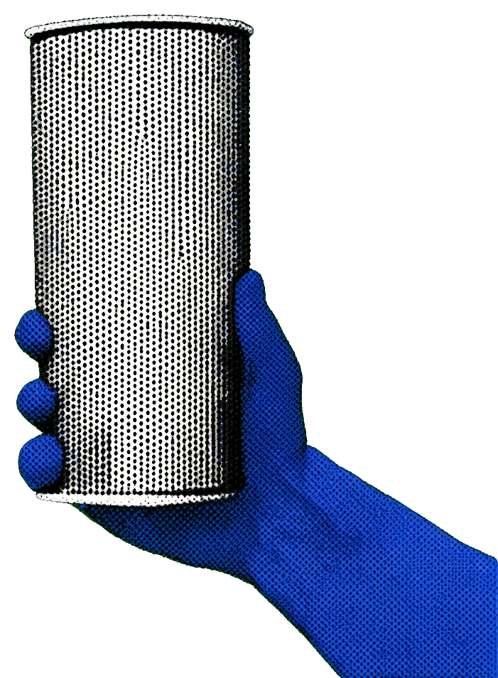
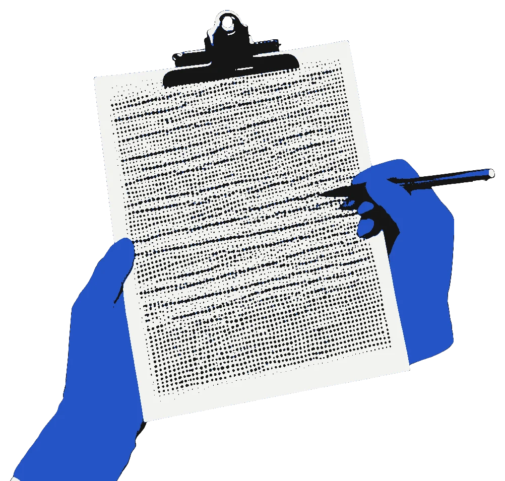

KEEP UNTIL
The canning line's date coder, run in reverse. A stamp nobody can read is read, then printed again large, with what to do.

Palette. Light is the default: sort tables stand under high-bay light
Lid#d0cec8 canvas
Carton#f2f2ef panels
Ink#151515 text
Glove#2553c6 Read item only
Keep#1d7a46 band
Set aside#e3b628 band
Discard#b2282d band
Table#1c1d1e dark canvas
Panel, dark#2a2b2d
Glove, dark#6b8ff0 focus
Doto, weight 900, capitals: the name and every date
2027 FE 14
Best before 14 February 2027
Atkinson Hyperlegible Next: every word, read from a metre away
Set it aside for the lead
75.7 / t5Keep
24 / t1Canned soup keeps 24 months past best before.
13.5 / t-1Food Banks Canada chart, page 8 · ratio 1.333 on 18 px
The can lid: favicon and app icon only
On the page it read as radar decoration (round 3), so the signature device is the re-printed stamp.
Icons: 7 by 7 dot pictograms, drawn in code
This laptop and the cloud: where each read happened, beside every verdict.
Signature device: the re-printed stamp
2027 FE 14
Read off the package, printed again large, column by column in 320 ms. The waiting screen shows a sample.
Illustration: two-ink halftone, cobalt only for the gloves, on nothing




Verdict bands: colour fills, the word always says it
Dark: the sort-table black
Voice: the sort lead beside a first-shift volunteer
Hold an item up to the camera
Canned vegetables keep 12 months past best before.
Set it aside for the lead. The two reads disagree on the date.
No Wi-Fi. Keep sorting: items go to the sheet when it comes back.
Never: expired (for best before), AI-powered, smart sorting, scan, seamless.
Charter (17 laws, CHARTER.md; checked by lint_brand.py)
- Dates and the name in Doto, upper case
- Words in Atkinson Hyperlegible Next
- Verdict largest, stamp second
- Cobalt once: Read item
- Verdict colours fill bands, never text
- Discard red only after two reads agree
- The re-printed stamp is the signature device
- Illustrations: halftone on nothing
- Icons: 7 by 7 dot pictograms
- Carton white is the only panel
- No viewfinder brackets, scan line or frost
- Read-by badge beside every verdict
- Sentence-case titles, no full stop
- Internal words never reach the screen
- One moment: the stamp prints
- Developer controls in a closed drawer
- Never "expired" for best before
Where it came from: the CFIA stamp on a carton top from my own pantry, and the blue nitrile gloves at a food bank sort table (Wikimedia Commons)